Comparing different vertex-approaching policies#
The purpose of this notebook is to demonstrate how to use stochastic_matching to observe the performance of policies designed to reach vertices of the stable polytope.
The protocol is as follows:
We define the problem:
Model (graph and arrival rates)
Rewards associated to each edge
We run the following policies:
\(\epsilon\)-filtering, for various values of \(\epsilon\)
\(k\)-filtering, for various values of \(k\)
\(EGPD\), for various values of \(\beta\)
Note that the first two policies use the knowledge of the optimal vertex, computed using the model and rewards. The last one only uses the rewards and ignore the polytope structure.
Then we compute the following metrics to observe their trade-offs.
Regret: difference between the reward rate of the optimal flow and the reward rate of the achieved flow.
Delay: some of the average queue size over all item classes.
Setup#
We import some packages.
[1]:
import numpy as np
import matplotlib.pyplot as plt
import stochastic_matching as sm
from multiprocess import Pool
from stochastic_matching import XP, Iterator, evaluate
# change the default figure size
plt.rcParams["figure.figsize"] = (7, 3)
We make a function to wrap-up the experiments we want to perform.
[2]:
n_steps = 10**10
e_range = Iterator("epsilon", np.logspace(-3, 0, 10), name="ϵ")
k_range = Iterator("k", [2**i for i in range(12)])
b_range = Iterator("beta", np.logspace(-3, 1, 10), name="β")
def make_xps(model, rewards):
base = {
"model": model,
"n_steps": n_steps,
"rewards": rewards,
"max_queue": 50000,
"seed": 42,
}
return sum(
[
XP(name="ϵ-filtering", simulator="e_filtering", iterator=e_range, **base),
XP(
name="k-filtering",
simulator="longest",
forbidden_edges=True,
iterator=k_range,
**base,
),
XP(name="EGPD", simulator="virtual_queue", iterator=b_range, **base),
]
)
Diamond graph#
We start with a simple example on a diamond graph.
[3]:
# define model
diamond = sm.Model(
adjacency=np.array([[0, 1, 1, 0], [1, 0, 1, 1], [1, 1, 0, 1], [0, 1, 1, 0]]),
rates=[2, 3, 3, 2],
)
diamond.vertices
[3]:
[{'kernel_coordinates': array([-1.]),
'edge_coordinates': array([0., 2., 1., 2., 0.]),
'null_edges': [0, 4],
'bijective': False},
{'kernel_coordinates': array([1.]),
'edge_coordinates': array([2., 0., 1., 0., 2.]),
'null_edges': [1, 3],
'bijective': False}]
Let us try to reach the vertex with forbidden edges [1, 3].
Gentle rewards#
To start, we use gentle rewards, where the forbidden edges are clearly indicated.
[4]:
rewards = np.array([1, -1, 1, -1, 1])
diamond.optimize_rates(rewards)
[4]:
array([2., 0., 1., 0., 2.])
[5]:
with Pool() as p:
res = evaluate(make_xps(diamond, rewards), pool=p, cache_name="diamond_gentle")
[6]:
for k, v in res.items():
plt.loglog(np.abs(v["regret"]), np.abs(v["delay"]), marker="o", label=k)
plt.xlabel("Regret")
plt.ylabel("Delay")
plt.legend()
plt.show()

EGPD and \(k\)-filtering have similar performance, with \(\epsilon\)-filtering coming third.
Adversarial rewards#
Now we choose rewards where one of the forbidden edges has the highest reward (the vertex remains the same).
[7]:
rewards = np.array([1, 2.9, 1, -1, 1])
diamond.optimize_rates(rewards)
[7]:
array([2., 0., 1., 0., 2.])
[8]:
with Pool() as p:
res = evaluate(make_xps(diamond, rewards), pool=p, cache_name="diamond_adversarial")
[9]:
for k, v in res.items():
plt.loglog(v["regret"], v["delay"], marker="o", label=k)
plt.xlabel("Regret")
plt.ylabel("Delay")
plt.legend()
plt.show()

EGPD is now way above \(k\)-filtering (best) and \(\epsilon\)-filtering (second best).
Edge case#
Now, we pick up a reward that is orthogonal to the polytope, e.g. any stable policy is optimal.
[10]:
rewards = np.array([1, 3, 1, -1, 1])
rewards @ diamond.vertices[0]["edge_coordinates"]
[10]:
4.999999999999999
[11]:
rewards @ diamond.vertices[1]["edge_coordinates"]
[11]:
5.0
[12]:
base = {
"model": diamond,
"n_steps": n_steps,
"rewards": rewards,
"max_queue": 50000,
"seed": 42,
}
xp = sum(
[
XP(
name="k-filtering",
simulator="longest",
forbidden_edges=[0, 4],
iterator=k_range,
**base,
),
XP(
name="ϵ-filtering",
simulator="e_filtering",
forbidden_edges=[0, 4],
iterator=e_range,
**base,
),
XP(name="Longest", simulator="longest", **base),
XP(name="EGPD", simulator="virtual_queue", iterator=b_range, **base),
]
)
[13]:
with Pool() as p:
res = evaluate(xp, pool=p, cache_name="diamond_edge")
[14]:
for pol, key in [("EGPD", "β"), ("ϵ-filtering", "ϵ"), ("k-filtering", "k")]:
x = res[pol][key]
y = res[pol]["delay"]
yref = res["Longest"]["delay"]
plt.loglog(x, y, marker="o", label=pol)
plt.loglog([min(x), max(x)], [yref, yref], ":", label="Longest")
plt.xlim([min(x), max(x)])
plt.xlabel(key)
plt.ylabel("Delay")
plt.legend()
plt.show()
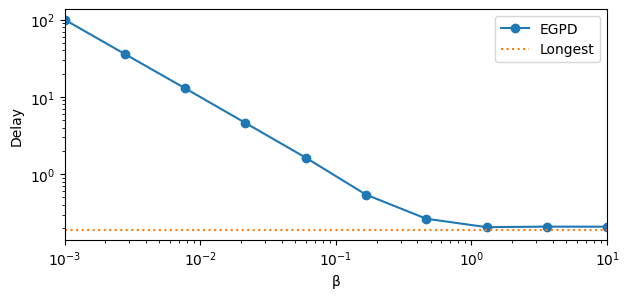
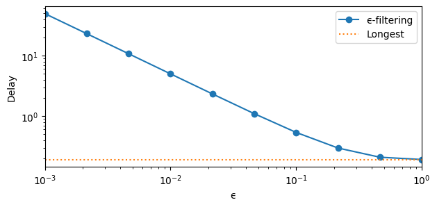
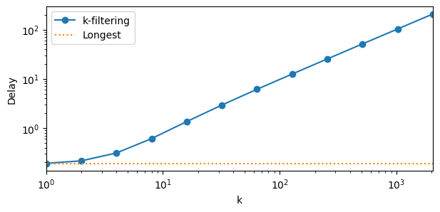
Here, all optimization policies pay a delay price to reach a vertex that doesn’t need to be reached. They are all outperformed by a simple Longest policy.
Co-domino, bijective vertex#
Try a stable vertex from a co-domino.
[15]:
bijective = sm.Model(
adjacency=np.array(
[
[0, 1, 1, 0, 0, 0],
[1, 0, 1, 1, 0, 0],
[1, 1, 0, 0, 1, 0],
[0, 1, 0, 0, 1, 1],
[0, 0, 1, 1, 0, 1],
[0, 0, 0, 1, 1, 0],
]
),
rates=[4, 5, 5, 3, 3, 2],
)
bijective.vertices
[15]:
[{'kernel_coordinates': array([-0.75, -1. ]),
'edge_coordinates': array([3., 1., 1., 1., 3., 0., 2., 0.]),
'null_edges': [5, 7],
'bijective': True},
{'kernel_coordinates': array([-0.75, 1. ]),
'edge_coordinates': array([1., 3., 1., 3., 1., 0., 0., 2.]),
'null_edges': [5, 6],
'bijective': True},
{'kernel_coordinates': array([ 0.25, -1. ]),
'edge_coordinates': array([3., 1., 2., 0., 2., 1., 2., 0.]),
'null_edges': [3, 7],
'bijective': True},
{'kernel_coordinates': array([0.25, 1. ]),
'edge_coordinates': array([1., 3., 2., 2., 0., 1., 0., 2.]),
'null_edges': [4, 6],
'bijective': True},
{'kernel_coordinates': array([1.25, 0. ]),
'edge_coordinates': array([2., 2., 3., 0., 0., 2., 1., 1.]),
'null_edges': [3, 4],
'bijective': True}]
We aim for [3, 7].
Gentle rewards#
[16]:
rewards = [1, 1, 1, -1, 1, 1, 1, -1]
bijective.optimize_rates(rewards)
[16]:
array([3., 1., 2., 0., 2., 1., 2., 0.])
[17]:
with Pool() as p:
res = evaluate(make_xps(bijective, rewards), pool=p, cache_name="bijective_gentle")
[18]:
for k, v in res.items():
plt.plot(v["regret"], v["delay"], marker="o", label=k)
plt.xlabel("Regret")
plt.ylabel("Delay")
plt.xlim([0, None])
plt.legend()
plt.show()
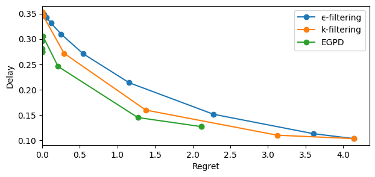
Adversarial rewards#
[19]:
rewards = np.array([-1, -1, -0.5, 0.4, 1.5, 2.5, -1, -1])
bijective.optimize_rates(rewards)
[19]:
array([3., 1., 2., 0., 2., 1., 2., 0.])
[20]:
with Pool() as p:
res = evaluate(
make_xps(bijective, rewards), pool=p, cache_name="bijective_adversarial"
)
[21]:
for k, v in res.items():
plt.semilogy(v["regret"], v["delay"], marker="o", label=k)
plt.xlabel("Regret")
plt.ylabel("Delay")
plt.xlim([0, None])
plt.legend()
plt.show()
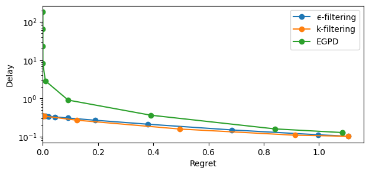
Co-domino, injective vertex#
[22]:
# define model
injective = sm.Model(
adjacency=np.array(
[
[0, 1, 1, 0, 0, 0],
[1, 0, 1, 1, 0, 0],
[1, 1, 0, 0, 1, 0],
[0, 1, 0, 0, 1, 1],
[0, 0, 1, 1, 0, 1],
[0, 0, 0, 1, 1, 0],
]
),
rates=[2, 4, 2, 4, 2, 2],
)
injective.vertices
[22]:
[{'kernel_coordinates': array([-1. , -0.66666667]),
'edge_coordinates': array([2., 0., 0., 2., 2., 0., 2., 0.]),
'null_edges': [1, 2, 5, 7],
'bijective': False},
{'kernel_coordinates': array([-1. , 1.33333333]),
'edge_coordinates': array([0., 2., 0., 4., 0., 0., 0., 2.]),
'null_edges': [0, 2, 4, 5, 6],
'bijective': False},
{'kernel_coordinates': array([ 1. , -0.66666667]),
'edge_coordinates': array([2., 0., 2., 0., 0., 2., 2., 0.]),
'null_edges': [1, 3, 4, 7],
'bijective': False}]
We choose [0, 2, 4, 5, 6] (the most injective vertex).
Gentle rewards#
[23]:
rewards = [-1, 1, -1, 1, -1, -1, -1, 1]
injective.optimize_rates(rewards)
[23]:
array([0., 2., 0., 4., 0., 0., 0., 2.])
[24]:
with Pool() as p:
res = evaluate(make_xps(injective, rewards), pool=p, cache_name="injective_gentle")
[25]:
for k, v in res.items():
plt.loglog(v["regret"], v["delay"], marker="o", label=k)
plt.xlabel("Regret")
plt.ylabel("Delay")
plt.legend()
plt.show()
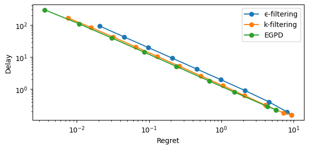
Adversarial rewards#
[26]:
rewards = np.array([-1, 1, -1, 1, 4.9, 4.9, -1, 1])
injective.optimize_rates(rewards)
[26]:
array([0., 2., 0., 4., 0., 0., 0., 2.])
[27]:
with Pool() as p:
res = evaluate(
make_xps(injective, rewards), pool=p, cache_name="injective_adversarial"
)
[28]:
for k, v in res.items():
plt.loglog(v["regret"], v["delay"], marker="o", label=k)
plt.xlabel("Regret")
plt.ylabel("Delay")
plt.legend()
plt.show()
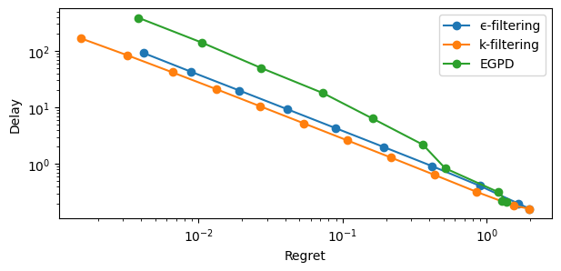
Hypergraph#
Last but not least: Stolyar’s example from https://arxiv.org/abs/1608.01646
The main difference compared to previous experiments is that we have a hypergraph instead of a simple graph. as a consequence, we use VQ-base policies instead of longest-based policies for \(\epsilon\)-filtering and \(k\)-filtering.
[29]:
def make_hypergraph_xps(model, rewards):
base = {
"model": model,
"n_steps": n_steps,
"rewards": rewards,
"max_queue": 50000,
"seed": 42,
}
return sum(
[
XP(
name="ϵ-filtering",
simulator="e_filtering",
base_policy="virtual_queue",
iterator=e_range,
**base,
),
XP(
name="k-filtering",
simulator="virtual_queue",
forbidden_edges=True,
iterator=k_range,
**base,
),
XP(name="EGPD", simulator="virtual_queue", iterator=b_range, **base),
]
)
[30]:
hypergraph = sm.Model(
incidence=[
[1, 0, 0, 0, 1, 0, 0],
[0, 1, 0, 0, 1, 1, 1],
[0, 0, 1, 0, 0, 1, 1],
[0, 0, 0, 1, 0, 0, 1],
],
rates=[1.2, 1.5, 2, 0.8],
)
hypergraph.vertices
[30]:
[{'kernel_coordinates': array([-0.95137114, -1.39721027, -1.8187728 ]),
'edge_coordinates': array([1.2, 1.5, 2. , 0.8, 0. , 0. , 0. ]),
'null_edges': [4, 5, 6],
'bijective': True},
{'kernel_coordinates': array([-0.87751221, -1.00105977, -0.27035114]),
'edge_coordinates': array([1.2, 0.7, 1.2, 0. , 0. , 0. , 0.8]),
'null_edges': [3, 4, 5],
'bijective': True},
{'kernel_coordinates': array([-0.78310692, 0.12871187, 0.15942051]),
'edge_coordinates': array([1.2, 0. , 0.5, 0. , 0. , 0.7, 0.8]),
'null_edges': [1, 3, 4],
'bijective': True},
{'kernel_coordinates': array([-0.74907409, 1.02372897, -0.89783356]),
'edge_coordinates': array([1.2, 0. , 0.5, 0.8, 0. , 1.5, 0. ]),
'null_edges': [1, 4, 6],
'bijective': True},
{'kernel_coordinates': array([ 0.28485256, -0.75722774, -0.02651911]),
'edge_coordinates': array([0.5, 0. , 1.2, 0. , 0.7, 0. , 0.8]),
'null_edges': [1, 3, 5],
'bijective': True},
{'kernel_coordinates': array([ 1.04125419, -0.9792125 , -1.40077503]),
'edge_coordinates': array([0. , 0.3, 2. , 0.8, 1.2, 0. , 0. ]),
'null_edges': [0, 5, 6],
'bijective': True},
{'kernel_coordinates': array([ 1.06895129, -0.83065606, -0.82011691]),
'edge_coordinates': array([0. , 0. , 1.7, 0.5, 1.2, 0. , 0.3]),
'null_edges': [0, 1, 5],
'bijective': True},
{'kernel_coordinates': array([ 1.0817136 , -0.49502465, -1.21658718]),
'edge_coordinates': array([0. , 0. , 1.7, 0.8, 1.2, 0.3, 0. ]),
'null_edges': [0, 1, 6],
'bijective': True}]
Aim for [0, 1, 5], as in the original example. Note that the example is bijective, so little delay is expected. In fact, all vertices are bijective.
Original rewards#
To start with, consider the original rewards proposed in the article:
[31]:
rewards = [-1, -1, 1, 2, 5, 4, 7]
hypergraph.optimize_rates(rewards)
[31]:
array([0. , 0. , 1.7, 0.5, 1.2, 0. , 0.3])
[32]:
with Pool() as p:
res = evaluate(
make_hypergraph_xps(hypergraph, rewards), pool=p, cache_name="hyper_original"
)
[33]:
yl = [0.1, 10**4]
for k, v in res.items():
plt.semilogy(np.abs(v["regret"]), np.abs(v["delay"]), marker="o", label=k)
plt.semilogy([0, 0], yl, "k:")
plt.xlim([-0.2, 4])
plt.ylim(yl)
plt.xlabel("Regret")
plt.ylabel("Delay")
plt.legend()
plt.show()
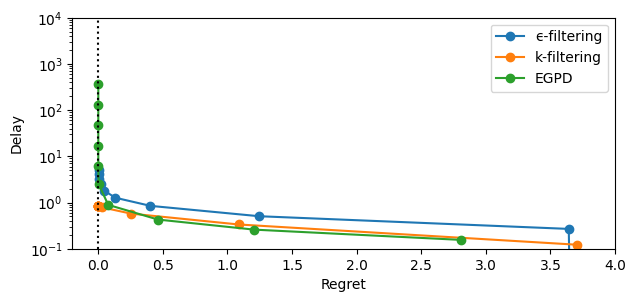
We see that the performance of EGPD is quite bad. The delay keeps increasing event after the optimal flow has been reached, while \(k\)-filtering converges to the stable edge-filtering solution.
Gentle rewards#
[34]:
rewards = [-1, -1, 1, 1, 1, -1, 1]
hypergraph.optimize_rates(rewards)
[34]:
array([0. , 0. , 1.7, 0.5, 1.2, 0. , 0.3])
[35]:
with Pool() as p:
res = evaluate(
make_hypergraph_xps(hypergraph, rewards), pool=p, cache_name="hyper_gentle"
)
[36]:
yl = [0.1, 10**4]
for k, v in res.items():
plt.semilogy(np.abs(v["regret"]), np.abs(v["delay"]), marker="o", label=k)
plt.semilogy([0, 0], yl, "k:")
plt.xlim([-0.1, 1.5])
plt.ylim(yl)
plt.xlabel("Regret")
plt.ylabel("Delay")
plt.legend()
plt.show()
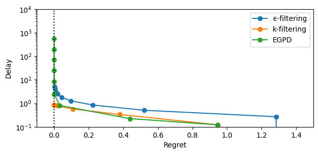
In this example, gentle rewards do not help, EGPD still fails to leverage the fact that the vertex is bijective.
Variant (second arrival rates)#
In https://arxiv.org/pdf/1608.01646, the authors introduce a new arrival profile and observe how the system evolves. In particular, we observe on their Figure 6 that the delay (\(\hat{Q}_0\)) increases. Let us observe how things change under a polytope perspective.
[37]:
hypergraph.rates = [1.8, 0.8, 1.4, 1]
hypergraph.vertices
[37]:
[{'kernel_coordinates': array([-1.11577889, -0.7324815 , -1.41267519]),
'edge_coordinates': array([1.8, 0.8, 1.4, 1. , 0. , 0. , 0. ]),
'null_edges': [4, 5, 6],
'bijective': True},
{'kernel_coordinates': array([-1.04191996, -0.336331 , 0.13574648]),
'edge_coordinates': array([1.8, 0. , 0.6, 0.2, 0. , 0. , 0.8]),
'null_edges': [1, 4, 5],
'bijective': True},
{'kernel_coordinates': array([-1.00788713, 0.5586861 , -0.92150759]),
'edge_coordinates': array([1.8, 0. , 0.6, 1. , 0. , 0.8, 0. ]),
'null_edges': [1, 4, 6],
'bijective': True},
{'kernel_coordinates': array([ 0.212638 , -0.45381632, -1.13401 ]),
'edge_coordinates': array([1. , 0. , 1.4, 1. , 0.8, 0. , 0. ]),
'null_edges': [1, 5, 6],
'bijective': True}]
We have much less vertices than with the previous rates (4 against 8). Yet, they are still all bijective. Remind that if you take a surjective stabilizable model at random (i.e. take a surjective graph and rates randomly drawn in the simplex, provided they stabilize the graph), all its vertices are bijective. You need symmetries and/or carefully chosen arrival to have stable model with injective vertices.
Look at the new vertex:
[38]:
rewards = [-1, -1, 1, 2, 5, 4, 7]
hypergraph.optimize_rates(rewards)
[38]:
array([1. , 0. , 1.4, 1. , 0.8, 0. , 0. ])
OK, so the solution is to consume all possible matches between first and second node, and to self-consume everything else. Let use see how the different policies behave:
[39]:
with Pool() as p:
res = evaluate(
make_hypergraph_xps(hypergraph, rewards), pool=p, cache_name="hyper2_original"
)
[40]:
yl = [0.1, 10**4]
for k, v in res.items():
plt.semilogy(np.abs(v["regret"]), np.abs(v["delay"]), marker="o", label=k)
plt.semilogy([0, 0], yl, "k:")
plt.xlim([-0.06, 3.0])
plt.ylim(yl)
plt.xlabel("Regret")
plt.ylabel("Delay")
plt.legend()
plt.show()
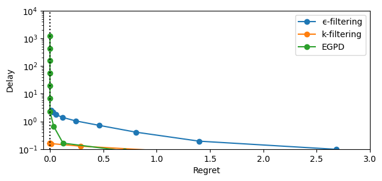
OK, so here, the delay for \(k\)-filtering in the no-regret zone is even lower than before (less than 1) and stable (no explosion when \(k\rightarrow +\infty\)), while EGPD has a big delay that goes to \(\infty\) when \(\beta\rightarrow 0\).
Variant (gentle rewards)#
[41]:
rewards = [1, -1, 1, 1, 1, -1, -1]
hypergraph.optimize_rates(rewards)
[41]:
array([1. , 0. , 1.4, 1. , 0.8, 0. , 0. ])
[42]:
with Pool() as p:
res = evaluate(
make_hypergraph_xps(hypergraph, rewards), pool=p, cache_name="hyper2_gentle"
)
[43]:
yl = [0.1, 10**3]
for k, v in res.items():
plt.semilogy(np.abs(v["regret"]), np.abs(v["delay"]), marker="o", label=k)
plt.semilogy([0, 0], yl, "k:")
plt.xlim([-0.01, 0.5])
plt.ylim(yl)
plt.xlabel("Regret")
plt.ylabel("Delay")
plt.legend()
plt.show()
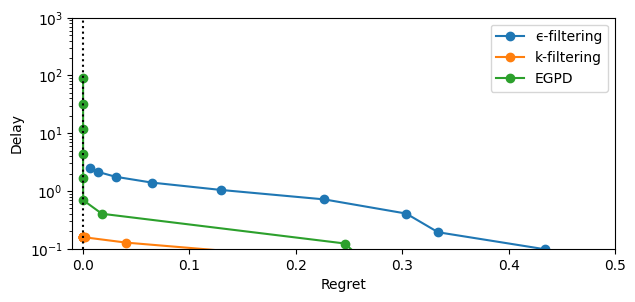
In the no-regret zone, EGPD’s delay are slightly lower compared to using the original rewards, but there is still a delay explosion not experienced by \(k\)-filtering (nor \(\epsilon\)-filtering).